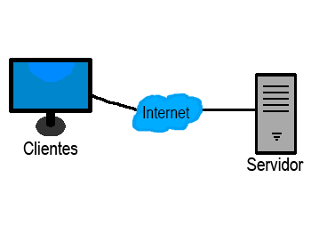
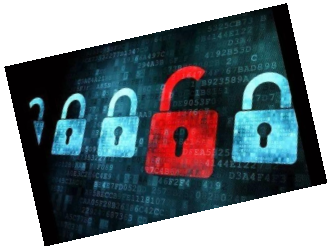
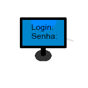

Manual De Segurança
1°: Redes sociais como o Facebook, Twitter, WhatsApp, YouTube, Instagram entre outras redes sociais, qualquer site de download de vídeos, imagens, entre outros tipos de arquivos que possa comprometer a estabilidade da internet, todos os itens citados estão proibidos de serem acessadas durante o horário de trabalho.
2°: Todos os dias as no final do expediente os funcionários designados da empresa deveram fazer backups de todos os arquivos da empresa em um servidor interno e também em um servidor externo determinado pela empresa.
3°: Todos os funcionários deveram fazer um curso de segurança da informação ou caso o tenha comprovar para a empresa mostrando os documentos de conclusão do curso. Para manter os computadores da empresa em total segurança e qualidade os funcionários devem saber se proteger de todos os tipos de golpes e trazendo uma navegação segura.
4°: As senhas devem ser bem elaboradas no mínimo de 8 caracteres e com números e letras em maiúsculo, quanto mais caracteres melhor. Evite usar nomes, sobrenomes, números de telefones ou datas. Não use a mesma senha em todos os serviços. E o principal não marque a senha em nenhum lugar, guarde a senha na cabeça para nunca esquece-la.
5°: Esta Proibido alterar qualquer tipo de configurações, instalar ou desinstalar programas no computador da empresa. Caso alguma programa não esta instalado no computador comunicar os técnicos da área que logo sera instalado, caso realmente esteja faltando.
6°: Os funcionários deveram trocar de senha periodicamente. Para manter a segurança de suas contas e também da empresa deve-se trocar no mínimo uma vez por semana a senha e que ela seja muito bem elaborada de acordo com a regra número 4°.
7°: Os funcionários não podem fazer downloads ou uploads de arquivos que não sejam para fins estritamente profissionais e que o tamanho não ultrapasse 500MB.
8°: Todo o conteúdo feito dentro do ambiente de trabalho com as ferramentas adquiridas pela empresa, não podem ser vendidas para fins comerciais de seu criador, tudo feito dentro do seu ambiente de trabalho é da empresa.
9°: Phishing é um golpe que criminosos usam para pegar informações de alguém como CPF, contas bancaria, cartão de crédito entre outras coisas, para conseguirem essas informações eles usam e-mails ou sites falsos.
10°: Todos os funcionários devem andar com um cartão de identificação feito pela empresa, antes de entrar na empresa sera pedido um código de identificação que estará no cartão de identidade criptografado que só o portador saberá decifrar, esse código sera entregue na contratação do funcionário. Caso perca o cartão avise imediatamente a empresa para fazer um novo e cancelar o antigo.